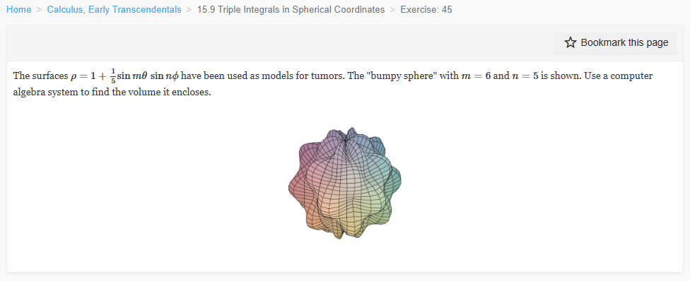

Please solve the problem in the following image.
(Image `20260929_203439_346479_utc_0800_0.png`. Alt text: Image: human_20260929_203439_346479_utc_0800)

20260929_203439_346479_utc_0800_0.png
End of problem
Answer
## Volume of the bumpy sphere
In spherical coordinates the volume element is
$$
dV=\rho^2\sin\phi\,d\rho\,d\phi\,d\theta,
$$
where $\theta$ is the azimuthal angle and $\phi$ is the polar angle. The surface is
$$
\rho=f(\theta,\phi)=1+\frac15\sin(6\theta)\sin(5\phi).
$$
Because the minimum value of $f$ is $1-\frac15=\frac45>0$, every ray from the origin meets the surface exactly once, so the enclosed volume is
$$
V=\int_0^{2\pi}\int_0^{\pi}\int_0^{f(\theta,\phi)}\rho^2\sin\phi\,d\rho\,d\phi\,d\theta
=\frac13\int_0^{2\pi}\int_0^{\pi}\bigl[f(\theta,\phi)\bigr]^3\sin\phi\,d\phi\,d\theta.
$$
Let $a=\frac15\sin(6\theta)\sin(5\phi)$. Then
$$
(1+a)^3=1+3a+3a^2+a^3.
$$
Integrating term by term:
- Constant term:
$$
\frac13\int_0^{2\pi}\int_0^{\pi}\sin\phi\,d\phi\,d\theta
=\frac13(2)(2\pi)=\frac{4\pi}{3}.
$$
- Linear term: it contains $\int_0^{2\pi}\sin(6\theta)\,d\theta=0$, so it vanishes.
- Quadratic term:
$$
\frac13\cdot\frac{3}{25}\left(\int_0^{2\pi}\sin^2(6\theta)\,d\theta\right)
\left(\int_0^{\pi}\sin^2(5\phi)\sin\phi\,d\phi\right).
$$
Now
$$
\int_0^{2\pi}\sin^2(6\theta)\,d\theta=\pi,
$$
and, using $\sin^2(5\phi)=\frac{1-\cos(10\phi)}2$,
$$
\int_0^{\pi}\sin^2(5\phi)\sin\phi\,d\phi
=1-\frac12\int_0^{\pi}\cos(10\phi)\sin\phi\,d\phi
=1+\frac{1}{99}=\frac{100}{99}.
$$
Thus the quadratic term contributes
$$
\frac13\cdot\frac{3}{25}\cdot\pi\cdot\frac{100}{99}
=\frac{4\pi}{99}.
$$
- Cubic term: it contains $\int_0^{2\pi}\sin^3(6\theta)\,d\theta=0$, so it vanishes.
Therefore
$$
V=\frac{4\pi}{3}+\frac{4\pi}{99}
=\frac{132\pi}{99}+\frac{4\pi}{99}
=\frac{136\pi}{99}.
$$
Numerically,
$$
V=\frac{136\pi}{99}\approx 4.316.
$$
$$
\boxed{V=\frac{136\pi}{99}\approx 4.316}
$$
---
No graphical results.